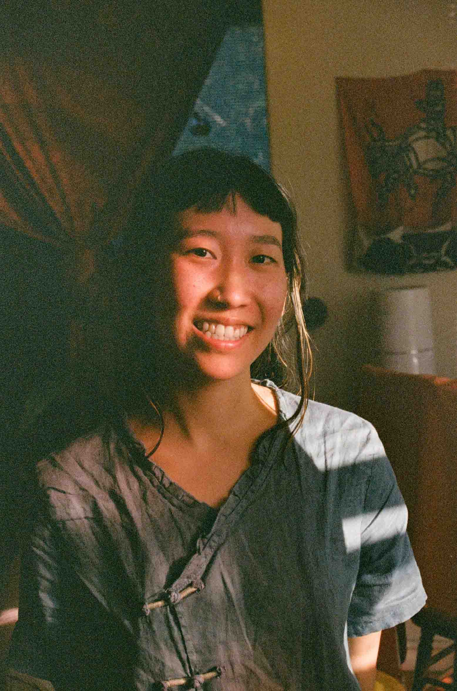

Hello and welcome!
I am so glad to find you here. My name is Whitney and I am a non-binary Chinese bodyworker (CMT). I have been practicing massage since I was a child, working on family members, specifically my mother who had chronic lower back pain.
My own relationship to my body has been complicated, to say the least. As a female-bodied, Asian person growing up in the Western world, pervasive messages of how I should look, what my appearance reflected about who I am, and what society values in a body, became deeply embedded in my soul. Chinese culture is also obsessed with thinness and “beauty,” and my upbringing was deeply influenced by these values.
I, like so many others, developed disordered eating habits and an extremely negative view of myself. My body was my enemy because I had no control over how I looked, and therefore no control over how others perceived and judged me. My restrictive eating habits caused me to be malnourished, while my self-loathing kept me totally disconnected from my body. My mental health suffered greatly during my adolescence and young adulthood.
After leaving home and finding community, as well as having more time to connect with myself, I slowly but surely began to find the joy in movement, learned how to nourish myself with food, and began the long process of unlearning judgment and hatred of my body.
My first experience with massage was in college, when I was in a study session with a friend. We were studying for a computer science exam, a subject that my brain simply doesn’t understand, and I fell into panic and extreme stress. My friend had me collect my materials and took me to her room, where she generously gave me such a caring, spiritual massage. I left feeling like I had discovered something beyond this world, and so much awe for the generosity and love I had received. My mind and body felt completely different from when I started the study session.
It took me many years after college to arrive at my commitment to my own health. I am still understanding what health means to me, and will be learning for the rest of my life. For now, my understanding is that connecting my body with nature, human touch, and nourishment directly influences my mental wellbeing. Feeling good in my body allows me to feel good in my mind.
I soon realized how so many of us are never taught what being healthy means – what it means to feel good in ourselves. We are taught that pain is normal and that we should accept it.
As I’ve developed a deeper connection to my own body, I feel a desire to help others with their bodily pain and disconnection, especially those who historically have not had access to bodywork or may feel unsafe in a conventional massage environment. My biggest wish is that I can help you feel that your body is your friend and greatest treasure.
I work with the body holistically, rather than working in separate “parts.” Clients often come in with pain in a local area, and I take care to address all other parts of the body that are connected to that area. I also take into deep consideration the emotional body. As a trauma-informed therapist, and someone with CPTSD, I understand the importance of holding space for emotions during session.
My work has often been described as "precise; methodical; intentional." I work very slowly, which allows for the nervous system to feel safe, and for us to truly go deep. You can find detailed reviews here. The main modalities I utilize are deep tissue work, myofascial release, BoneWork, and energy work. My practice draws from both Western and Eastern modalities, and I also incorporate cupping, Thai massage, and acupressure in sessions. I will forever be a student of bodywork, and am planning to learn craniosacral work as well as complete training in Structural Integration soon!
I completed my BoneWork training in March of 2026 with Joy Carey. From Joy: “BoneWork is a hands-on modality that engages bone and joint systems through dynamic contact, periods of stillness, and precisely directed pressure. Rather than approaching bone as a static or inert structure, BoneWork treats bone as living tissue that participates in structural organization and adaptation. This work emphasizes how bones relate to one another within joint systems and how those relationships influence posture, movement, and load transfer throughout the body. BoneWork prioritizes listening, timing, and cooperation with tissue response without overloading the body with force.”
I am a Reiki master and completed my certification in July of 2024. Reiki is a Japanese form of energy work in which the practitioner channels universal life force through them into the client, to aid the client in healing various ailments, from stress to emotional distress to physical issues. If you are curious about Reiki and want to learn more, feel free to contact me.
I graduated from the National Holistic Institute in 2023 after completing their 800 hour core program.
Gentle Tiger Bodywork was borne from my desire to provide a holistic, safe, and affordable healing space for all people, especially LGBTQIA+ people of color. I like to get to know my clients on a deeper level so long as they feel comfortable sharing. I love being in community with my clients, and prefer to work in a way that feels non-transactional and non-clinical. My practice deeply relies on clear communication, transparency, and collaboration.
I remind you that I am not the healer; you are. I will do my best to assist you on your healing journey, but ultimately you must be willing to do the work which is required for healing. Seeking bodywork is a great first step in caring for yourself, so I applaud you for that! Let's work together to address your holistic care needs.
My work is rooted in liberation and healing justice. The goal of my work is to free us from the physical pain inflicted upon us by an insidious system deeply rooted in capitalism, fascism, and colonization. Pain keeps us feeling “at odds” with our bodies, and when we disconnect from our bodies, we lose agency over ourselves and our absolute power. I hope to bring awareness to the strength, beauty, and wholeness of ourselves through my work. It is a great pleasure and honor to be trusted by my community.
In my free time, I enjoy being in the ocean, lying down, creating art and music, biking and listening to music (at the same time), baking yummy vegan, gluten-free and refined sugar-free treats (hit me up for recipes), finding neighborhood cats to pet, and spending time with my partner and friends.
Feel free to explore my website, especially the "Helpful Resources" link! If you have any questions about sessions with me, or just want to chat about bodywork and liberation, you can reach me at gentletigerbodywork@gmail.com.
I also host a monthly free massage skillshare called MELT (Massage Exchange & Learning Together) where I teach bodywork techniques to the community (you!) and share knowledge that everyone has a right to. If you’d like to sign up for our email list to stay up to date on future events, click here: https://forms.gle/aCwaFtsuFET11YYp8
Feel free to explore my website, especially the "Helpful Resources" link!
Book with me here
How you can contact me
- Text
- (510) 737-4330
- Call
- (510) 737-4330
- Email
- gentletigerbodywork@gmail.com
- Where?
- West Oakland • California • USA
- Personal Website
- whitneyx.info